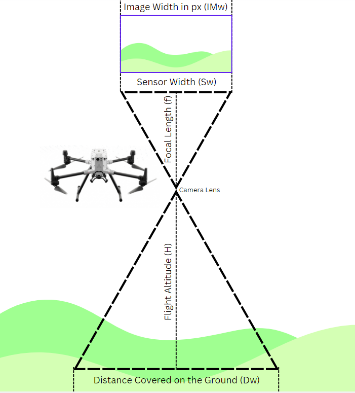
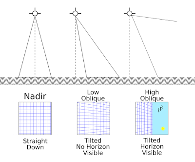
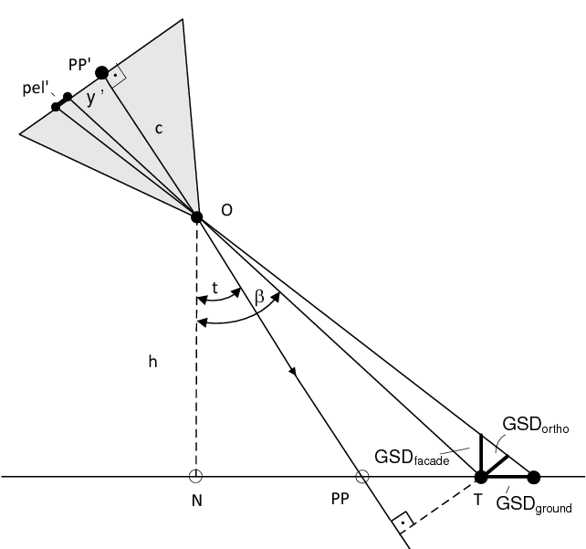
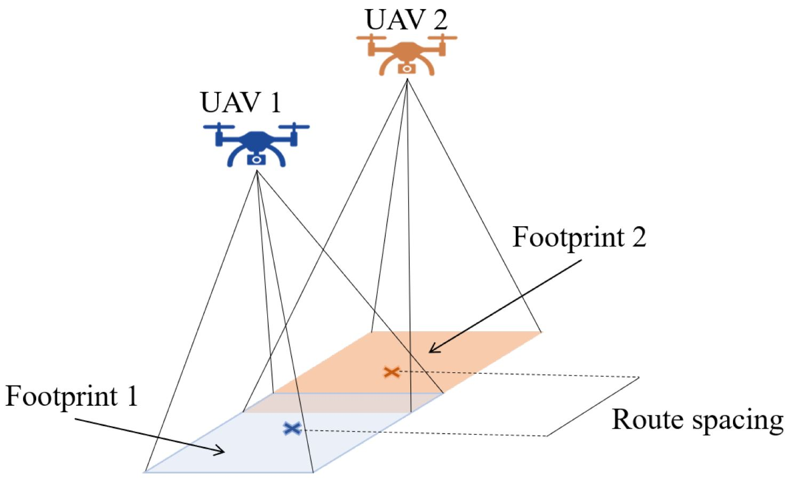

Drone Mission Planning for Photogrammetry#
This lab teaches students how to plan drone flights for photogrammetric production of digital surface models and orthorectified aerial imagery. Although several examples of automated drone mission planning software and apps exist (e.g. Pix4Dcapture, Drone Deploy, Map Pilot Pro), remote pilots should understand the methods and math behind drone mission planning for photogrammetry.
Imagery Overlap#
Ground Sampling Distance#
A critical concept in drone mission planning is ground sampling distance (GSD). Ground sampling distance refers to the scale and resolution of aerial imagery and resulting digital surface models. Specifically, the ground sampling distance is the pixel or cell size of the raster imagery, in other words, the equivalent ground distance from the center of one cell to the next. The cell size is equivalent to the resolution of the imagery.
Ground sampling distance ultimately depends on the flight altitude of the drone. Lower flights (where the camera is closer to the ground) result in higher resolutions, while higher flights (where the camera is farther from the ground) result in lower resolution. Other variables needed to calculate ground sampling distance include the size of the camera sensor and the focal length of the camera. In photography, the focal length of a camera refers to the distance between the camera sensor and the lens. A higher focal length results in a higher magnification (higher zoom level).
The image below shows how the ground distance can be calculated:
{kind=link}
Image credit: Skycatch
Of course, this image is not to scale, but the above exaggeration demonstrates that the ground distance covered in a single drone image can be calculated based on the Triangle Proportionality Theorem, shown by the following formula:
Because drone photos are typically in landscape orientation, the width is larger than the height. For this reason, sensor width (sensor size) and distance width are typically used to calculate ground sampling distance (although the math still works when sensor height and distance height are used).
We can then derive the following formula:
Finally, distance covered can be translated into ground sampling distance (cell size) by dividing distance covered by the image width of the photo in pixels.
Flight Altitude is user defined, but all other constants depend on drone specifications, which can be difficult to find. An online GSD calculator with drone specifications is available here.
Oblique Imagery#
The above equation applies only to nadir imagery, taken at a 90° angle from the front of the drone, where on a flat plane all pixels will have the same dimensions. When taking oblique imagery, between 0° and 90°, the imagery is distorted, effectively with pixels further away from the camera representing longer ground distances than those closer to the camera. Oblique imagery taken from the same altitude will therefore always have a lower resolution than nadir imagery.
{kind=link}
Image credit: Hammer Missions
To determine ground resolution of oblique imagery, additional calculations are required, relying on basic trigonometry. Joachim Höhle has written a useful discussion of how to derive such calculations.
{kind=link}
In this image, c represents the focal length (f), pel’ the sensor width (Sw), h the flight altitude (H), t the oblique angle of the camera (measured not from the front of the drone but rather from the vertical, i.e. subtracting the camera angle from 90), PP the central pixel of the image, N the nadir point beneath the drone, PP’ the center of the camera sensor, y’ the distance between the center of the camera sensor and the pixel of interest for calculating GSD, and β the additional angle beyond the camera angle to reach the pixel of interest. Three different ground sampling distances are shown, the resolution relative to the orthogonal, a vertical facade, and the ground itself.
Drone Mission Planning in QGIS#
{kind=link}
Image credit: Luna et al. 2022
Readings#
Luna, M.A., M.S. Ale Isaac, A.R. Ragab, P. Campoy, P. Flores Peña, M. Molina. 2022. Fast Multi-UAV Path Planning for Optimal Area Coverage in Aerial Sensing Applications. Sensors 22:2297. https://doi.org/10.3390/s22062297
Olson, Kyle and Lynne M. Rouse. 2018. A Beginner’s Guide to Mesoscale Survey with Quadrotor-UAV Systems. Advances in Archaeological Practice 6(4):357–371. https://doi.org/10.1017/aap.2018.26